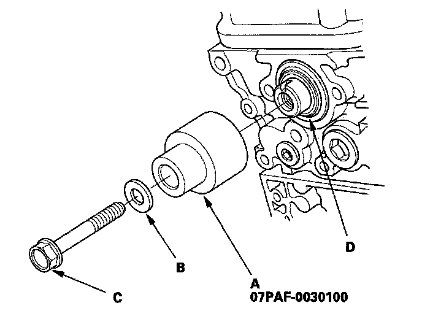

Camshaft Oil Seal: Service and Repair
Camshaft Oil Seal Installation - In CarSpecial Tools Required
Camshaft oil seal driver 07PAF-0030100
1. Remove the timing belt.
2. Remove the camshaft pulley and back cover.
3. Remove the camshaft oil seal.
4. Dry the camshaft oil seal housing.
5. Apply a light coat of multipurpose grease to the lip of the camshaft oil seal.
6. Using the special tool (A), washer (B), and a 12 x 75 x 1.25 mm bolt (C), press in the camshaft oil seal (D) about 0.5-1.5 mm (0.02-0.06 in.) below the surface of the cylinder head.

7. Apply new engine oil to the threads of the camshaft pulley mounting bolt. Install the back cover, then install the camshaft pulley.
8. Install the timing belt.